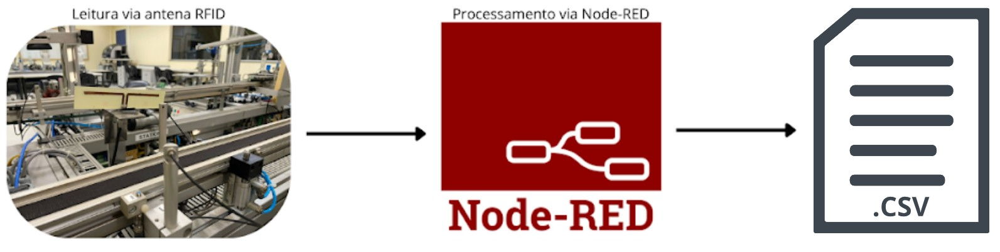
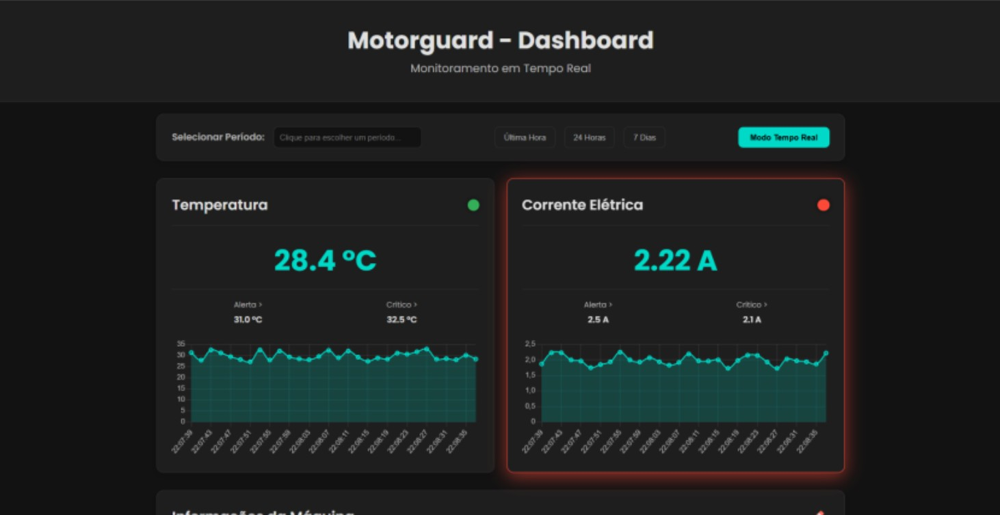
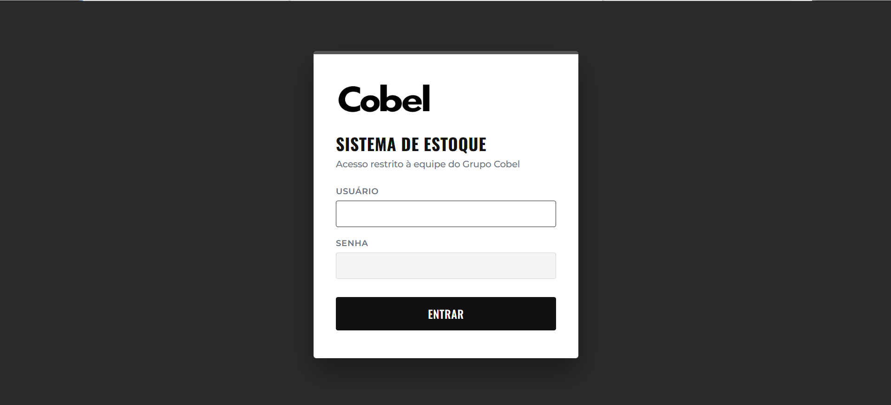

Técnico Automotivo especializado em veículos elétricos e híbridos, com background em automação industrial e desenvolvimento de ferramentas próprias — a ponte entre a oficina e a engenharia de processos. Da bancada de pesquisa ao diagnóstico de alta tensão.
Três projetos que resumem minha atuação: automação de sistemas legados com RFID, monitoramento preditivo de motores via IoT e automação de um processo real da minha rotina de trabalho na oficina.

Estrutura baseada em .csv para tornar o roteamento RFID de um FMS flexível, sem reescrever código Node-RED a cada mudança de rota.
Ver projeto →
Sistema supervisório de baixo custo com ESP32 para monitoramento e manutenção preditiva de motores elétricos monofásicos.
Ver projeto →
Sistema web próprio integrado ao ERP via Google Apps Script, eliminando erros manuais de cadastro e dando rastreabilidade em tempo real ao pátio da concessionária.
Ver projeto →Aberto a oportunidades em produção, automação e engenharia de testes na cadeia automotiva EV — assim como em sistemas embarcados e eletrônica de potência.